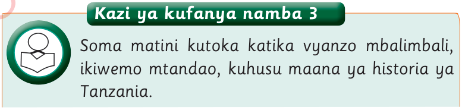

Kazi ya kufanya namba 3
Soma matini kutoka katika vyanzo mbalimbali, ikiwemo mtandao, kuhusu maana ya historia ya Tanzania.
Historia ya Tanzania ni elimu kuhusu matukio yaliyotokea nchini Tanzania tangu mwanzo wa maisha ya watu mpaka